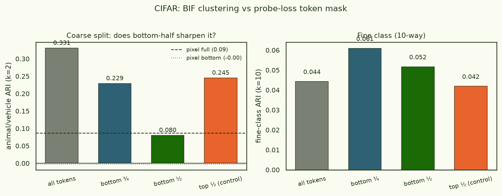
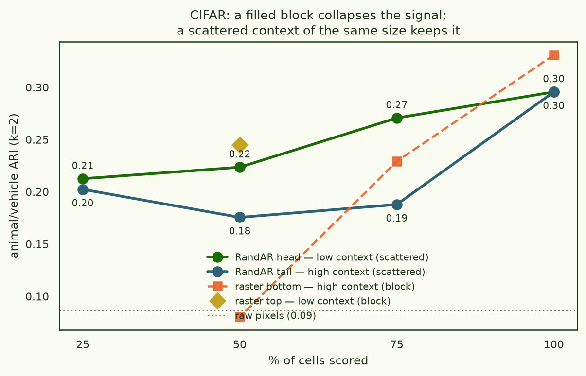
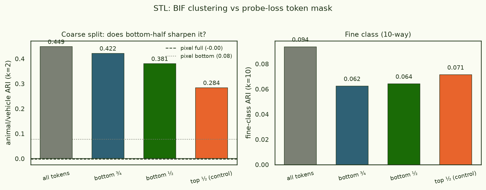

Where does the abstraction live? Masking and random-order probes
Across this thread the keeps recovering a coarse abstraction — animal vs vehicle on CIFAR and STL, animate vs inanimate on Tiny ImageNet — while missing the fine class. A natural worry: maybe the images are just clustering by low-level statistics (background colour, overall texture coarseness) that happen to correlate with animate/inanimate, and the "abstraction" is a mirage. If so, the signal should live in the cheap-to-predict parts of the image — flat backgrounds, sky — and we should be able to remove it by not scoring those regions.
This piece tests that directly, two ways, and the answer is more interesting than either "it's real" or "it's a mirage":
- Restricting the loss to the bottom half of the raster image destroys the animal/vehicle signal (ARI 0.33 → 0.08 ≈ pixels). The top half alone keeps almost all of it. So it looks spatial — and backwards from the "top is disposable background" intuition.
- But that collapse is an artifact of raster order, not of the bottom-half content. Train a model and score a scattered half of the cells given the other scattered half — the same 50% of the loss, but "without a large block filled in" — and the signal comes back (0.08 → 0.18, or 0.22 for a small scattered context).
- The abstraction signal is distributed across the whole image. Raster order confounds where a cell is (top/bottom) with how much contiguous context it is predicted from; it is the filled contiguous block, not the spatial region, that washes the category out.
Full disclosure up front: none of these readouts beats scoring the whole image (ARI ≈ 0.33) — you cannot recover more abstraction by throwing information away. The point is where the abstraction is, and what makes it disappear.
§1Two probes for "where is the signal?"
Everything reuses the CIFAR setup from the grooves study: a VQ-VAE tokeniser (f=4, 512 codes) turns each image into an 8×8 grid of 64 codes, and a small decoder-only transformer models that grid. The BIF is the covariance, over a local posterior, of the per-sample probe loss. Both probes below change only which tokens contribute to that per-sample loss — the SGLD chain (driven by the full training loss) is byte-for-byte the same, so every readout is measured on one identical posterior sample.
- masked readout (raster)
- standard raster-order model; per-sample loss = CE
summed over a token subset —
all(64),bottom-½(last 32 = bottom 4 rows),bottom-¾(last 48),top-½(first 32). One chain yields all four. - RandAR
- random-order AR (interleaved position-instruction + content tokens, à la RandAR / σ-GPT); at eval, order the 64 cells by a random permutation, prefill the first 1−f as scattered context and score the last f — an exact log p(scattered tail | scattered context). We read out both the head (first f, each cell predicted from little context) and the tail (last f, lots of context), averaged over 4 orders.
- scoring
- ensemble BIF across checkpoints → correlation → z-scored → spectral k=2 → adjusted Rand index vs the animal/vehicle split of 510 class-balanced probes; two independent SGLD seeds, gated on agreement.
§2Raster: the bottom half is nearly dead, the top half nearly full
Restricting the per-sample loss to a spatial band of the raster image, then clustering:

The bottom-½ readout (0.08) is no better than clustering the raw pixels
(0.09), whereas top-½ (0.25) retains most of the full-image signal (0.33) with
the same number of tokens. This is robust across training — the gap is present from the
first checkpoint and widens:
| checkpoint | all | bottom-¾ | bottom-½ | top-½ |
|---|---|---|---|---|
| epoch 2 | 0.283 | 0.115 | 0.039 | 0.278 |
| epoch 5 | 0.326 | 0.167 | 0.075 | 0.257 |
| epoch 10 | 0.335 | 0.186 | 0.093 | 0.257 |
| epoch 20 | 0.354 | 0.283 | 0.060 | 0.244 |
| epoch 40 | 0.340 | 0.287 | 0.072 | 0.237 |
Taken at face value this says the animate/inanimate signal lives in the top of a CIFAR image — the opposite of the intuition that the top is disposable sky/background and the object (the content) is what matters. But "top" in a raster model is loaded: those tokens come first, so they are predicted from little or no context, and their loss leans on the model's global prior over what kind of image this is — exactly the animate/inanimate information. The bottom tokens are predicted with the entire top of the image already given, so their loss is dominated by local completion — finish this texture — which is category-agnostic. Raster order has confounded image position with context amount.
§3RandAR: the collapse is the filled block, not the bottom
To break the confound, train a random-order model and score a scattered subset. Now "score 50% of the cells given the other 50%" no longer means "predict the bottom block from the top block"; the scored cells and their context are scattered across the whole image. If the bottom-½ collapse were about spatial content, scattered-50% should collapse too. It does not.

Scoring exactly half the cells, the four ways of choosing the other (conditioning) half fall into a clean 2×2 — how much context each scored cell sees, crossed with whether that context is a contiguous block or scattered:
| animal/vehicle ARI, 50% scored | contiguous block | scattered |
|---|---|---|
| low context (each cell predicted from little) | 0.245 · raster top | 0.224 · RandAR head |
| high context (predicted from the rest) | 0.080 · raster bottom | 0.176 · RandAR tail |
Only one cell of the 2×2 collapses to the pixel floor: high-context and a
filled contiguous block — which is exactly raster bottom-½. Everything else keeps
0.18–0.25. Two things both matter, and the raster bottom-half is the one case where they
stack: (i) low-context predictions carry the signal — head/top (0.22–0.25) beat
tail/bottom regardless of block-vs-scatter, because a cell predicted from little context
leans on the model's global "what kind of image is this" prior; (ii) among high-context
predictions, a scattered context (0.176) still beats a filled block (0.080) by
~0.10, because a filled block reduces the prediction to local texture-continuation that
ignores the category. Your "score the last half of the tokens without a large block filled
in" is the scattered high-context cell (0.176) — and it recovers most of what the raster
bottom-half (0.080) threw away. What none of the halves do is beat the whole image (≈0.30):
you can locate the signal, but not concentrate it.
§4Does it generalise? STL-10 at 64px
The cheap raster masking carries to higher resolution, and what it finds there is more clarifying than a clean replication. STL-10 (64px, a 16×16 = 256-code grid, the class-blind model) gives a different spatial pattern:

Two things change from CIFAR, and both point the same way. First, there is no collapse: even the weakest half (top-½, 0.28) is far above pixels (~0.08), and the bottom half keeps almost all of the full-image signal (0.38 of 0.45). Second, the spatial ordering reverses — on CIFAR the top half was best and the bottom nearly dead; on STL the bottom is best and the top weakest. Since which half carries the abstraction flips between datasets, no spatial region is privileged: the signal is genuinely distributed across the image. The dramatic CIFAR bottom-½ collapse is specific to its coarse 8×8 grid, where the bottom block is small and adjacent enough that predicting it reduces to local completion; at 16×16 a half-image is large and content-rich enough to retain the global category signal even as a contiguous block. (That coarse regime is also where the controlled RandAR scattered-vs-block contrast is largest — and where a 256-cell random-order model's order-averaged prefill readout is still affordable — which is why §3 lives at 8×8.)
§5What this means
The abstraction the BIF finds is not localised to a spatial region of the image, and it is not a low-level-statistics mirage that lives in cheap background tokens. It is spread across the whole grid: a scattered half of the cells carries a large fraction of it, and which spatial half looks best flips between CIFAR (top) and STL (bottom) — the clearest single sign that no region is privileged. What made it look localised on CIFAR — and made the "just restrict to the informative part" intuition misfire — is a property of the autoregressive factorisation, not of the images. Predicting a token from a large adjacent filled block turns the loss into local texture-completion, which is category-agnostic; the model's category knowledge shows up whenever a prediction must instead integrate global structure — from a scattered context, or (on the coarse CIFAR grid) from little context at all.
Two honest caveats. First, none of these partial readouts beats scoring the whole image: the most reproducible, highest-ARI signal still uses all 64 tokens. Second, the RandAR probe is a CIFAR-scale demonstration — a random-order model at 16×16 = 256 cells costs ~4× per step and the order-averaged prefill readout several times more, so the clean scattered-vs-block experiment here is 8×8. The cheaper raster masking is what §4 carries to higher resolution.
Reproduction of a probe idea suggested by the reader: "restrict the loss to the bottom half of the image; look into random-patch-order transformers so you can score the last half of the tokens without large blocks filled in." Both were run.
Code: masked_bif.py, randar.py, replica_randar.py,
randar_bif.py in the project repo. RandAR model (random-order AR, interleaved
position tokens; RandAR — Pang et al. CVPR 2025 / σ-GPT — Pannatier et al. 2024).
Weights, SGLD traces, and configs on HuggingFace under
arcadia-impact/small-abstraction-test-{randar,logs}. 1× H100.